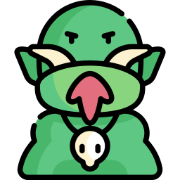
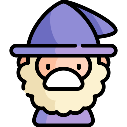
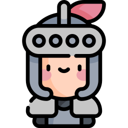
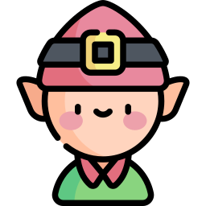
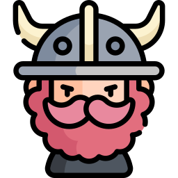

Meet My Friends
    

Bryce is powerful wizard...tis true. He is fierce, yet cunning. Brave, yet humble. Intuitive, yet Lactose. Bryce has seen hardships throughout his voyages but has always been a loyal mage. Bryce can conjure almost anything you could imagine outside of the dairy family. However, although he is loyal, he is dumb.
Ben...Brutal to his core, born to spill blood. Ben is a ruthless viking who has pillaged village after village. Nobody dares to step in his way, but when one does, they will pay the price of endless online shit talking and getting absolutely verbally wrecked. His insults are legendary, his degrading war cries are deafening, some even...mute him.

Aidan, our fearful tank. A knight in shining armor he is. Whether it be pulling all the trash in a room or landing the killing blow on a mighty Kraken he has always been brave. It is thought his courage may come from a deeper emotion. Many assume this emotion could be that of a gay emotion. The emotion described as a gay emotion is a very rare and ancient magic that has somehow found itself attached to Aidan. It gives him unfathomable bravery to face his deepest of fears, at the cost of wanting dick in his mouth.
Zach is a wise and cunning elf that always has a plan. He is often the most optimistic of us all. You will often hear him say "guys...we got this." Although he is very nice and uplifting, we cannot trust him yet to allow him into the brotherhood because he is 12.
Icons made by Freepik from www.flaticon.com